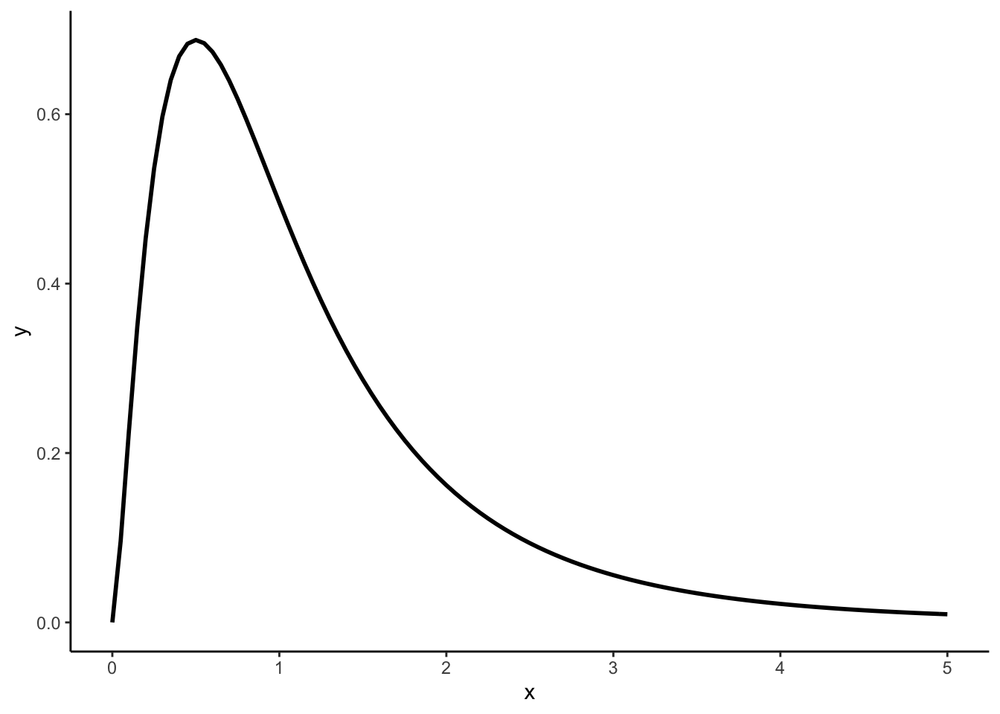
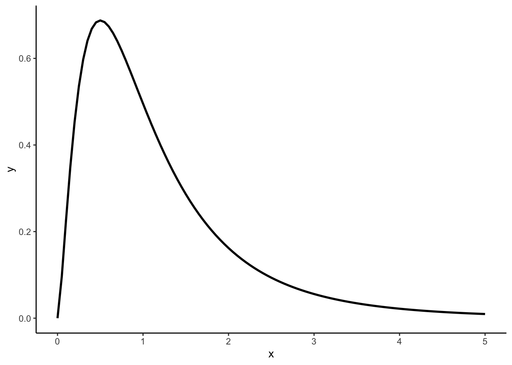
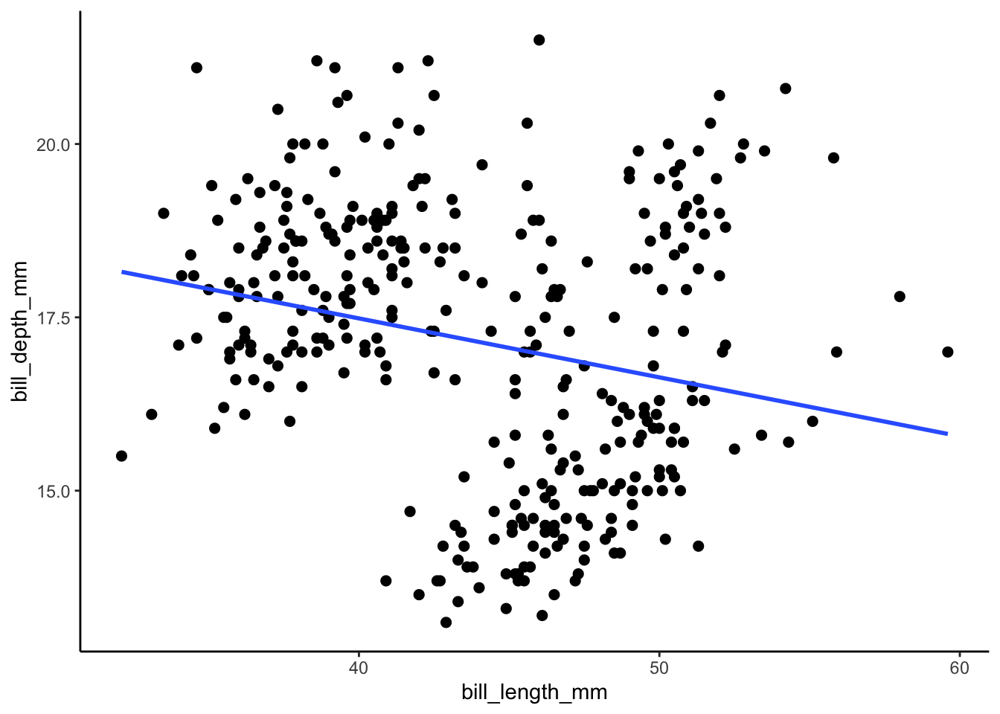
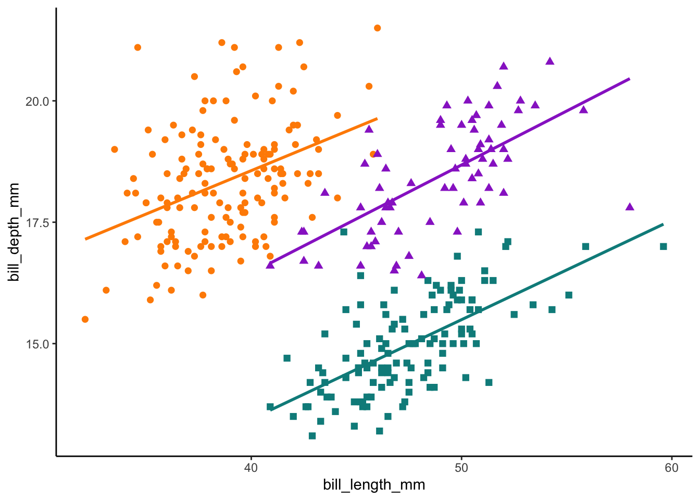

library(tidyverse)
ggplot(data.frame(x = c(0, 5)), aes(x = x)) +
stat_function(fun = "df", args = list(df1 = 5, df2 = 10), size = 1) +
theme_classic()
# 자유도가 (a, b)인 F-분포를 그리려면 args의 df1, df2에 a, b를 넣으면 됩니다.
# 위의 그래프는 자유도가 5, 10인 F-분포입니다.
오늘 소개할 R package는 palmerpenguins package입니다. 남극의 파머 군도에 있는 3곳의 섬에서 관찰된 3종의 펭귄 데이터가 담겨져 있죠.

파머 군도에 있는 Dreams Island, Torgersen Island, Biscoe Point에는 세 종의 펭귄이 살고 있습니다. 턱끈 펭귄(Chinstrap), 젠투 펭귄(Gentoo), 아델리 펭귄(Adélie) 이렇게 말이죠. palmerpenguins package에는 이 세 펭귄의 크기, 성별 정보가 담겨있습니다. 펭귄들의 데이터는 미국의 장기 생태 연구 네트워크(US Long Term Ecological Research Network)에서 운영하는 프로그램의 일부로, 파머 군도에서 2007년부터 2009년까지 크리스틴 고먼 박사에 의해 수집됐습니다.
R을 이용하는 유저 중에 iris 데이터를 한 번이라도 안 써본 유저는 없을 겁니다. iris 데이터는 로널드 피셔(Ronald Fisher)의 1936년 논문에 포함되어 있던 유서 깊은 자료입니다. R에 기본적으로 내장되어 있는 데이터이기도 하고 기본적인 R 연산, 시각화를 공부하는데 iris만한 데이터가 없죠. 그런데 이 iris 데이터를 이제 그만 쓰자는 목소리가 나오고 있어요. 바로 로널드 피셔 때문이죠.
피셔는 통계학자이자 유전학자이자 진화생물학자였습니다. 현대 통계학에 지대한 공을 세운 학자로 알려져있습니다. 통계학자 앤더스 할(Anders Hald)은 피셔를 두고 현대 통계학의 토대를 거의 혼자서 만들어낸 천재로 지칭할 정도죠. Bootstrap을 처음으로 제안한 브래들리 에프론(스탠퍼드 대학교 통계학과 교수)도 로널드 피셔를 20세기 통계에서 가장 중요한 인물이라고 말할 정도입니다.
F-검정, F-분포의 F가 바로 피셔의 F입니다. 피셔가 F-분포를 처음 제안했고, 조지 W 스네데코가 이후에 완성하면서 처음 제안한 피셔를 기려 F-분포, F-검정이라고 명명한거죠. 그래서 F-분포를 피셔-스네데코 분포라고도 합니다. ggplot2에서 제공해주는 stat_function을 활용해서 간단한 F-분포를 그려봤습니다. `
library(tidyverse)
ggplot(data.frame(x = c(0, 5)), aes(x = x)) +
stat_function(fun = "df", args = list(df1 = 5, df2 = 10), size = 1) +
theme_classic()
# 자유도가 (a, b)인 F-분포를 그리려면 args의 df1, df2에 a, b를 넣으면 됩니다.
# 위의 그래프는 자유도가 5, 10인 F-분포입니다.전체 대상(모집단)의 특성(모수)을 파악하기 위해 표본을 추출해 추론하는 건 현대 통계에서 아주 당연한 접근방식이죠? 이 흐름을 만든 게 바로 로널드 피셔입니다. 피셔는 모집단과 표본집단을 구분짓고, 일부(표본집단)를 통해 전체(모집단)에 대한 분석이 가능하다는 걸 귀무가설로 증명해 냈습니다. 귀무가설(null hypothesis)도 피셔가 정의한 개념입니다.
그리고 이걸 발전시켜서 추측통계학, 이른바 추계학(stochastic)을 탄생시키죠. 추계학은 통계의 범위를 수학뿐만 아니라 여론조사, 제품검사, 의약품의 효과 등 사회과학의 방법론까지 확장시켰습니다. 20세기 통계에서 가장 중요한 인물이라고 칭하는 게 부족함이 없어보입니다.
그런데 그 대단한 피셔가 우생학자로도 유명했습니다. BLM 시위 이후 피셔의 우생학자로서의 삶이 다시 재조명되면서 과학 분야 전반에서 정화의 흐름이 나오고 있습니다. 영국의 명문대학 유니버시티 칼리지 런던은 피셔의 이름이 붙은 연구 센터의 이름을 Center for Computational Biology로 바꾸기도 했죠. 그래서 iris를 과연 계속 써야하는지에 대한 논의가 나온 겁니다. 그 대안으로 떠오른 데이터셋이 바로 palmerpenguins package의 펭귄 데이터입니다.
파머 군도에서 수집된 원자료는 penguins_raw에 담겨있습니다. 관측치를 모두 활용하고 싶다면 penguins_raw를 불러오면 됩니다. 아마 대부분의 경우에는 penguins 데이터면 충분할겁니다. penguins 데이터에는 8개의 변수, 344개의 개체 정보가 들어가 있습니다. bill_length와 bill_depth는 펭귄의 부리의 크기를 나타낸 정보입니다. 아래 그림을 보면 length와 depth의 차이를 알 수 있어요.

palmerpenguins::penguins# A tibble: 344 × 8
species island bill_length_mm bill_depth_mm flipper_length_mm body_mass_g
<fct> <fct> <dbl> <dbl> <int> <int>
1 Adelie Torgersen 39.1 18.7 181 3750
2 Adelie Torgersen 39.5 17.4 186 3800
3 Adelie Torgersen 40.3 18 195 3250
4 Adelie Torgersen NA NA NA NA
5 Adelie Torgersen 36.7 19.3 193 3450
6 Adelie Torgersen 39.3 20.6 190 3650
7 Adelie Torgersen 38.9 17.8 181 3625
8 Adelie Torgersen 39.2 19.6 195 4675
9 Adelie Torgersen 34.1 18.1 193 3475
10 Adelie Torgersen 42 20.2 190 4250
# … with 334 more rows, and 2 more variables: sex <fct>, year <int># species : 펭귄 종을 나타내는 factor형 변수(Adélie, Chinstrap, Gentoo)
# island : 남극 파머 군도의 섬을 나타내는 factor형 변수(Biscoe, Dreams, Torgersen)
# bill_length_mm : 펭귄 부리의 길이를 ㎜단위로 나타낸 number형 변수
# bill_depth_mm : 펭귄 부리의 깊이를 ㎜단위로 나타낸 number형 변수
# flipper_length_mm : 펭귄 물갈퀴의 길이를 ㎜단위로 나타낸 integer형 변수
# body_mass_g : 펭귄 몸무게를 g단위로 나타낸 integer형 변수
# sex : 펭귄 성별을 나타낸 factor형 변수(female, male)
# year : 연구 시점이 담긴 integer형 변수(2007, 2008, 2009)iris대신 제시되는 데이터셋인만큼 기본적인 시각화를 연습하는데 penguins 패키지는 부족함이 없습니다. 펭귄 부리의 길이와 깊이를 가지고 scatter plot을 그려보겠습니다. geom_smooth로 상관관계를 살펴보면 음의 상관관계가 있다고 볼 수 있겠네요.
library(palmerpenguins)
ggplot(data = penguins, aes(x = bill_length_mm, y = bill_depth_mm)) +
geom_point(size = 2) +
geom_smooth(method = "lm", se = FALSE) +
theme_classic()
하지만 종별로 나눠서 살펴보면 어떨까요? 이번엔 Adélie, Chinstrap, Gentoo 세 종별로 scatter plot을 그려서 상관관계를 살펴보겠습니다. 종별로 보면 부리의 길이와 깊이는 양의 상관관계가 있어 보입니다. 야생의 데이터에서 확인할 수 있는 심슨의 역설(Simpson’s Paradox)의 아주 좋은 사례입니다. 영국의 통계학자 에드워드 심슨이 정리한 이 역설은 각각의 변수를 살피지 않고 전체 통계만 보고 판단하다가 발생할 수 있는 함정입니다.
library(palmerpenguins)
ggplot(data = penguins, aes(x = bill_length_mm, y = bill_depth_mm)) +
geom_point(aes(color = species,
shape = species),
size = 2) +
geom_smooth(method = "lm", se = FALSE, aes(color = species)) +
scale_color_manual(values = c("darkorange","darkorchid","cyan4")) +
theme_classic() +
theme(legend.position = "none")